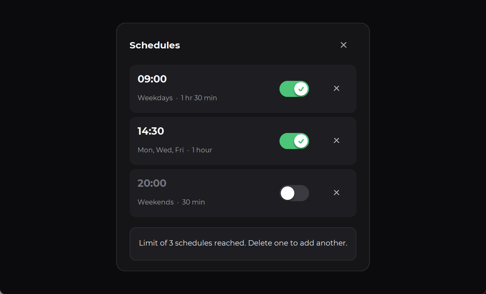
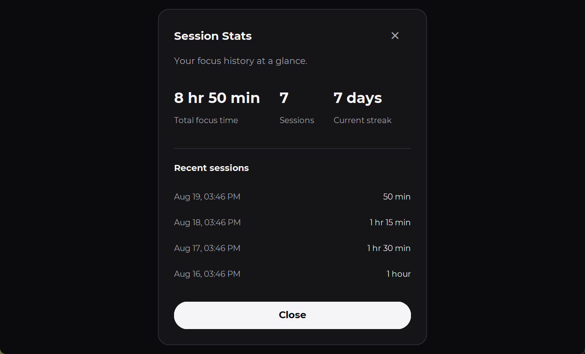
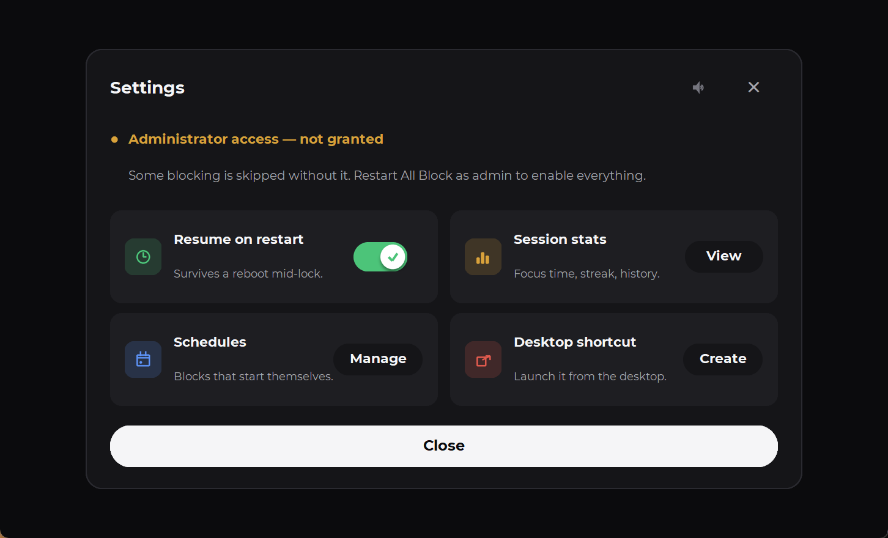

Windows · v7.0.0
Roll the wheel, hit start, and everything that isn't the work disappears until the clock runs out.
Scroll a wheel — it's the real thing
The block
Locked — keep scrolling
No pause. No “just five more minutes”. The session runs to zero, and it survives a reboot if you try to duck out the back.
Schedule
Set the week once. All Block turns up on time whether or not you were planning to be good that day.


Inside
One window, one job. Everything here earns its place.
Reboot mid-block and it comes back still locked, with the clock where you left it.
Pick the days, the time, and the length. It starts without being asked.
Focus time, sessions, and a running streak — kept on your machine, nowhere else.
That's what lets it close what it needs to. Without it, some blocking is skipped.
Both are first-class, and the switch is one click in the header.
A single .exe. No installer, no sign-up, no telemetry, no subscription.

Free · MIT
Download it, roll the wheel, and find out how much of the day you were actually giving away.